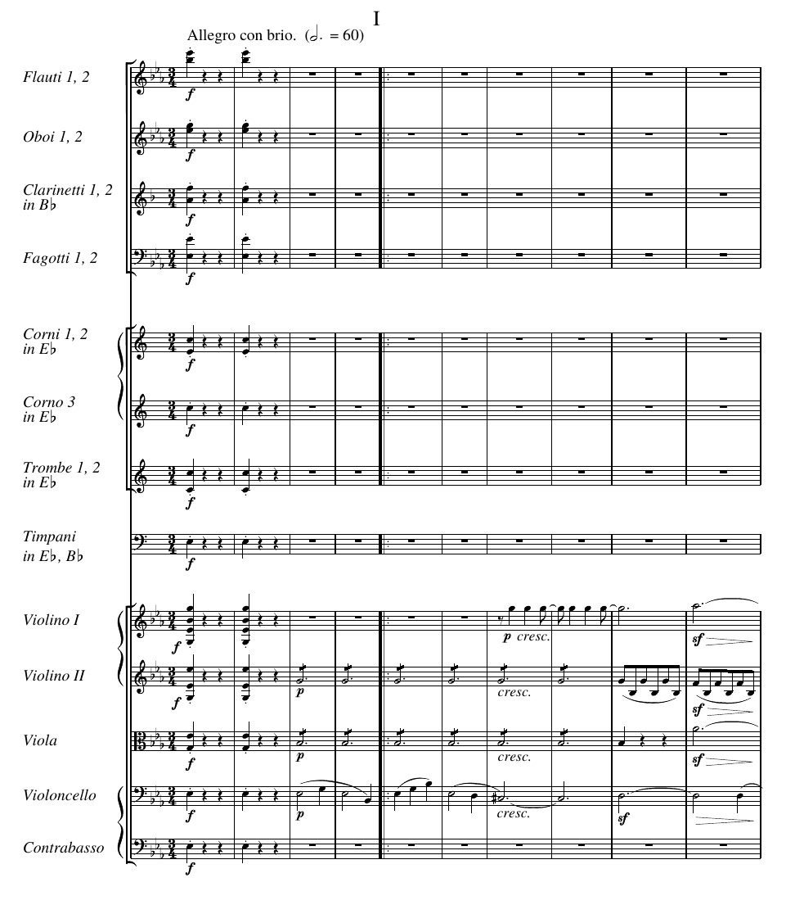
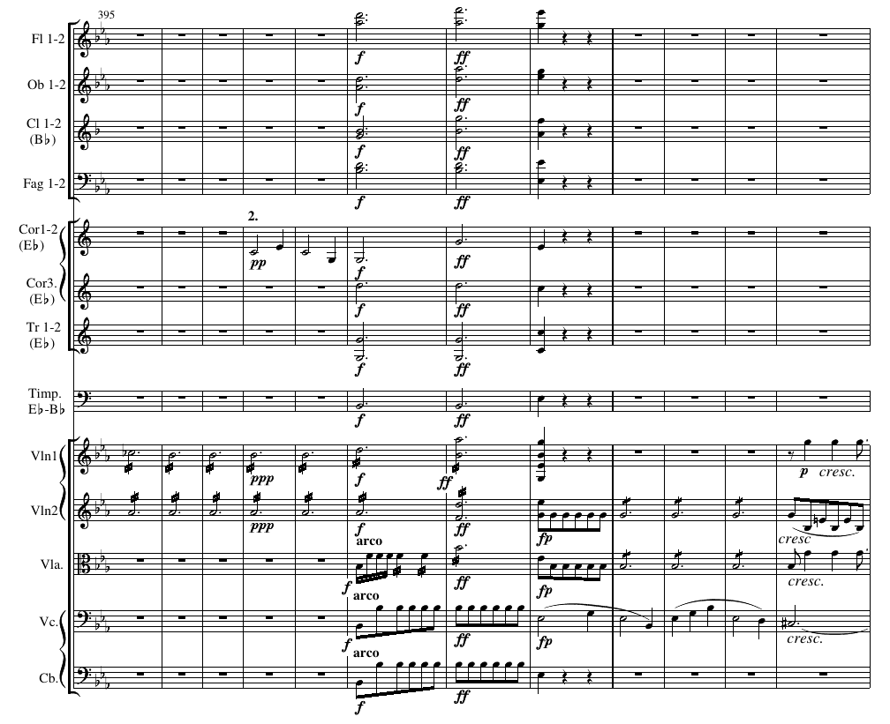
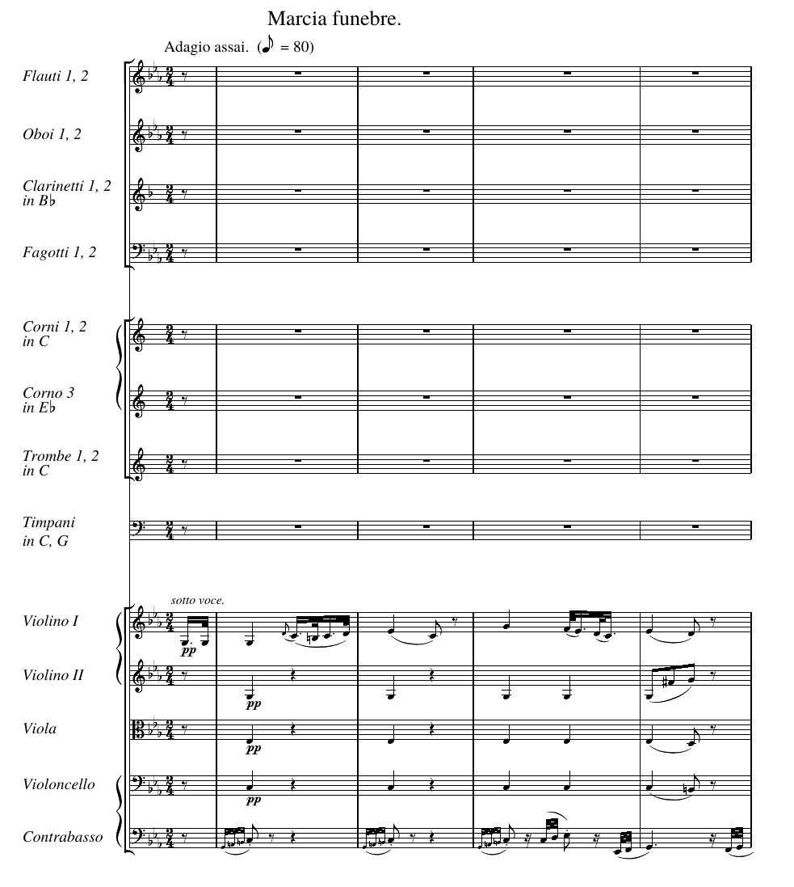
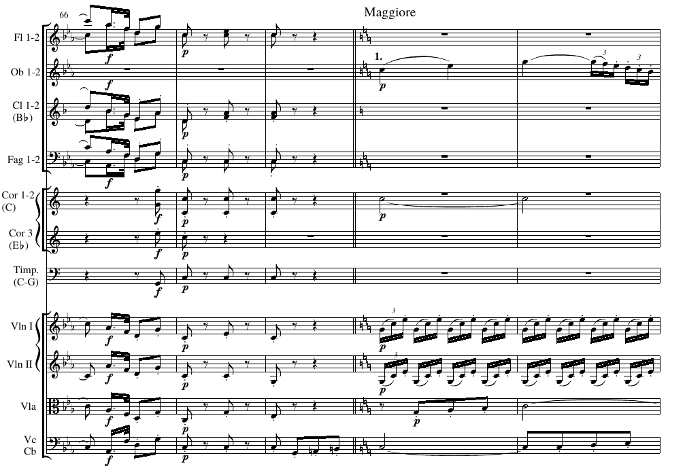
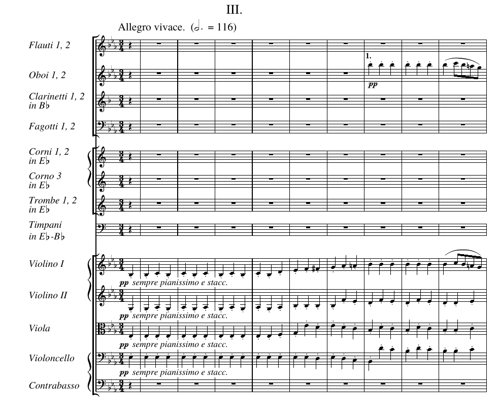
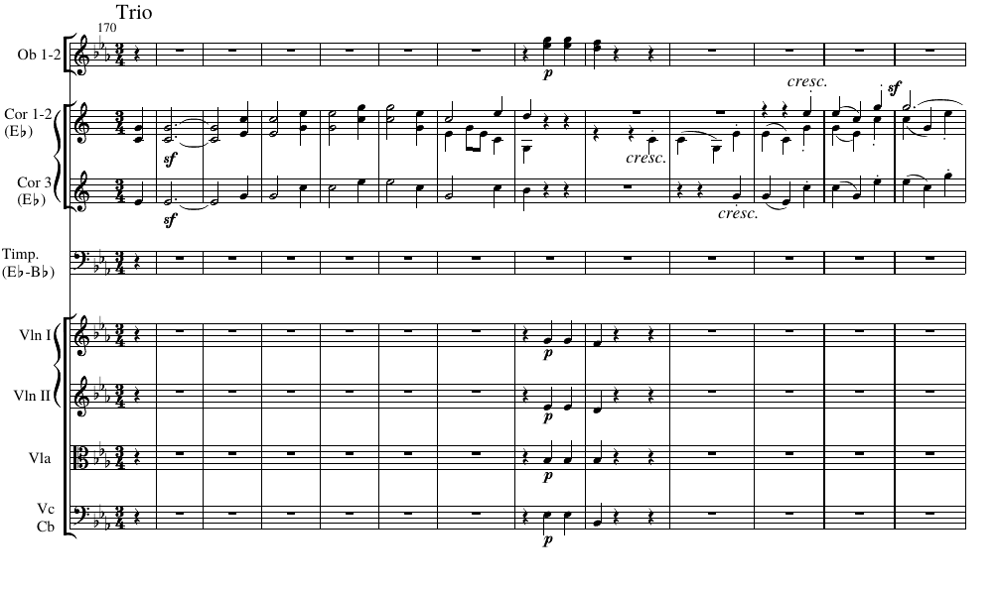
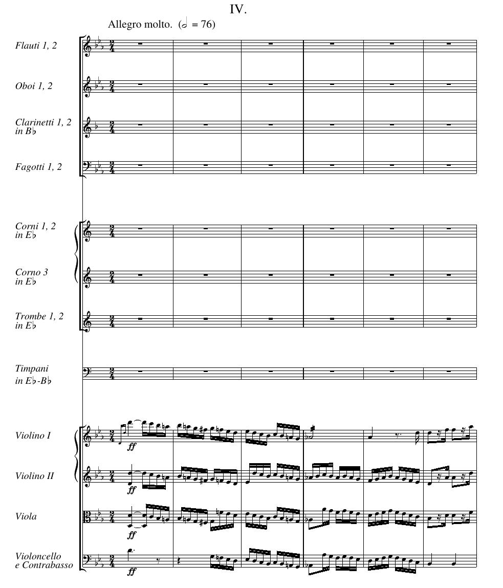
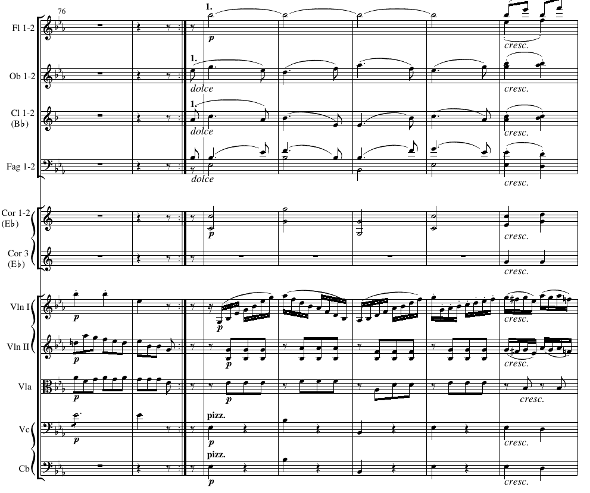
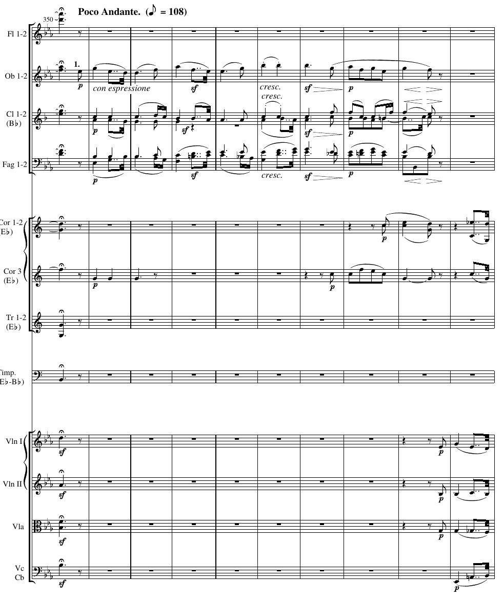

Introduction
Beethoven wrote the "Eroica" between 1802 and 1804. It was first heard in private, played by the orchestra of his patron Prince Lobkowitz at the prince's Vienna palace in 1804. The public premiere came on 7 April 1805 at the Theater an der Wien, with Beethoven conducting, at a concert that was a benefit for the violinist Franz Clement.
The title page once carried Napoleon's name. The story goes that Beethoven scratched it out when Napoleon crowned himself emperor, and it is often said he scraped hard enough to leave a hole in the paper. What is certain is that the symphony was published in 1806 with a dedication to Lobkowitz. Early listeners were divided. Some were baffled by the length and the daring. A famous story from the first rehearsal has Beethoven's pupil Ferdinand Ries muttering that the horn player must have lost count, because the horn seemed to come in far too early. It was deliberate (more on that in the first movement).
Three things to carry into every movement:
- Simple material, unsettled. The opening tune is little more than the notes of a chord. Beethoven keeps knocking it off balance with a foreign note, a syncopated accent, or a new key, then lets the symphony fight its way back.
- Whisper against blow. Nearly every movement swings between very quiet music and sudden full-orchestra force. Listen for the silences as much as for the noise.
- Breaking the mould. A new tune appears in the middle of the first movement, a funeral march takes the slow-movement slot, and the finale starts with the bare bass line of its own theme. Each of these was unusual for a symphony of its day.
The sound
This is Beethoven's standard orchestra with one addition: strings, pairs of flutes, oboes, clarinets and bassoons, two trumpets, timpani, and three horns where two was usual. There is no piccolo, no trombones and no other percussion. The third horn lets him write true three-part horn harmony, and the scherzo's trio is built on it: three horns carry the tune together. The brass and timpani also change tuning for the funeral march. The first two horns, the trumpets and the timpani are all set in C (timpani C and G) while the third horn stays in E-flat, then they return to E-flat for the scherzo. The result is a darker, more hollow sound in the march than in the movements around it.
1. Allegro con brio
Listening map
- OPENING (BARS 1–2) Two loud E-flat chords from the whole orchestra, and then the cellos alone, quietly, begin the main theme (bar 3).
- THE THEME It outlines an E-flat chord, almost like a fanfare played softly. Within a few bars a note that does not belong (a C-sharp) makes it lurch. That small unease drives the whole movement.
- EXPOSITION Several ideas follow, in B-flat major. Around bar 107 the whole orchestra hammers accents on the weak beats (marked sf), so the three-beat bar seems to stumble forward. The score asks for the exposition to be repeated.
- DEVELOPMENT After the repeat the music drops to pianissimo and starts to wander. A short fugato (voices entering one after another) appears around bars 236–246. Then a crashing, dissonant climax gives way to a new, gentle tune in the remote key of E minor (bar 284), a tune that did not appear in the exposition.
- THE HORN (NEAR BAR 395) The violins whisper on harmony that is waiting to resolve. A solo horn quietly states the main theme in the home key before the music has arrived there. The full orchestra then crashes in, and the real return of the theme follows.
- CODA The coda is long enough to feel like a second development. The new tune from the development comes back, and the movement ends in a long crescendo with trumpets and timpani at full force.

img/m1-open.png.
img/m1-horn.png.What to listen for
Start by getting the cello theme into your ear, and notice the moment it goes wrong. Then wait for two big events: the new tune in E minor, which feels like a door opening into another room, and the horn's too-early entrance, which feels like a mistake and is the opposite. When the new tune returns in the coda, it sounds like something that has finally been settled.
↑ Back to top2. Marcia funebre. Adagio assai
Listening map
- THE MARCH (BAR 1) The violins sing a dark, slow tune marked sotto voce ("under the voice") and pianissimo. Underneath, the double basses mutter a rumbling figure that is often heard as muffled drums.
- CONSOLATION A brief, gentler tune appears in E-flat major, but it soon slips back into C minor and the march returns, taken up by the winds.
- MAGGIORE (BAR 69) The key changes to C major, and the score actually says Maggiore at that point. An oboe sings over rippling violins, and the mood lifts for a while, like light through a window.
- THE MARCH RETURNS, THEN A FUGUE (BAR 114) The march theme comes back in the minor, then veers away. From bar 114 a fugue in F minor begins, with the strings entering one after another and loud accents (sf) driving it on.
- ENDING (BARS 235–247) The march breaks into fragments, with silences between the broken phrases, and the movement closes on a few soft chords.

img/m2-open.png.
img/m2-maggiore.png.What to listen for
The march is full of silence. Listen to the rests between phrases, and to how the sound thins to almost nothing at the very end. Listen also for how the major-key episode works as a memory of something warm, and how the fugue sounds like grief turning to protest.
↑ Back to top3. Scherzo. Allegro vivace
Listening map
- SCHERZO (BAR 1) The strings begin alone, sempre pianissimo e staccato ("always very quiet and short"), a scurrying whisper. After a few bars an oboe taps in on repeated notes.
- THE BURST The whisper grows, and by around bar 94 the whole orchestra is playing loud accents (sf) with the horns and trumpets joining in. The swing from hush to blast is the joke of the movement.
- TRIO (BAR 170) The pace relaxes and the three horns take over with a broad, call-like tune. The rest of the orchestra waits and then adds soft touches.
- SCHERZO RETURNS The fast music comes back, much as before.
- CODA (BAR 431) The music dies down again, then builds to a loud finish with all the instruments, ending on full chords.

img/m3-scherzo.png.
img/m3-trio.png.What to listen for
Wait for the sudden jumps in volume. The movement works by teasing you: you settle into the quiet scurrying, and then it explodes. When the trio arrives, notice how different three horns sound from one: the tune is wide and round. Then listen for how the coda gathers all of that force for a short, hard finish.
↑ Back to top4. Finale. Allegro molto
Listening map
- FLOURISH (BAR 1) The strings alone rush down in a loud run of fast notes. Loud chords from the full orchestra follow.
- THE BARE BASS Then the sound drops to almost nothing: a plucked bass line, with no tune on top. This is the skeleton of the theme. Over the next stretch, other voices are added to it one at a time.
- THE TUNE The tune itself arrives last. In the system beginning at bar 76 the oboe, clarinet and bassoon sing it, dolce, over plucked cellos and basses. Beethoven had already used this tune in his ballet The Creatures of Prometheus and in a set of piano variations.
- VARIATIONS The tune and the bass line are then passed around the orchestra and dressed in new clothes, with the mood changing from one variation to the next.
- POCO ANDANTE (BAR 350) A fermata, and the pace relaxes. The oboe sings a long, slow, song-like melody, con espressione, and the orchestra swells around it.
- PRESTO (BAR 428) The speed jumps, the whole orchestra plays ff, and the symphony rushes to its close.

img/m4-open.png.
img/m4-theme.png.
img/m4-coda.png.What to listen for
Listen for the plucked bass line at the start, and then try to hear it underneath each variation, even when the tune above it changes completely. The finale is a lesson in how many different things one simple idea can turn into. The slow, singing passage near the end is the emotional high point, and the Presto that follows sweeps it away.
↑ Back to topRecommended recordings
| Conductor · Orchestra | Character |
|---|---|
| Otto Klemperer · Philharmonia Orchestra | Unhurried and monumental. The march feels carved from stone. |
| Wilhelm Furtwängler · Vienna Philharmonic | A historic, remastered performance, known for urgency and tempo that bends with the drama. |
| Nikolaus Harnoncourt · Chamber Orchestra of Europe | Crisp and rhetorical, with sharp accents and sudden contrasts. |
| John Eliot Gardiner · Orchestre Révolutionnaire et Romantique | Period instruments: lean, fast and fiery. |